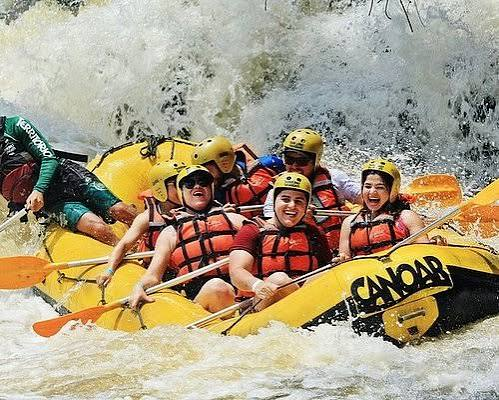
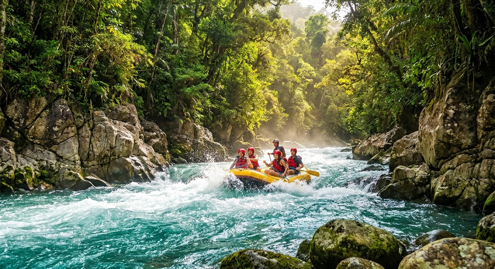
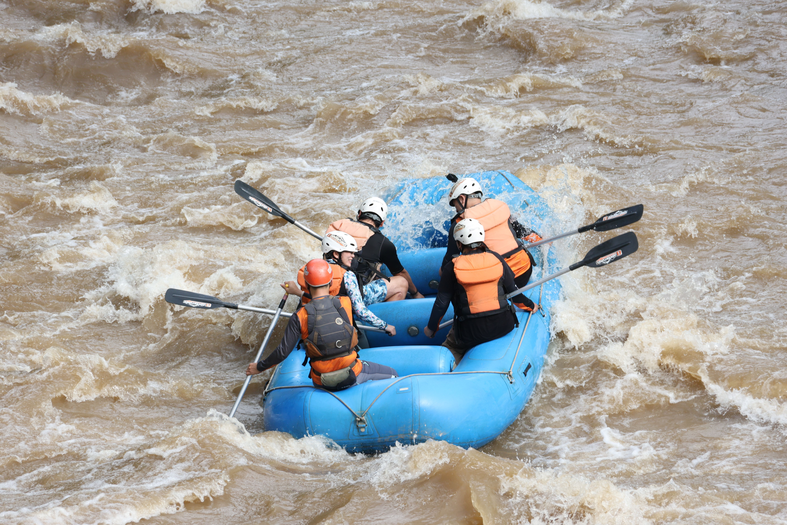
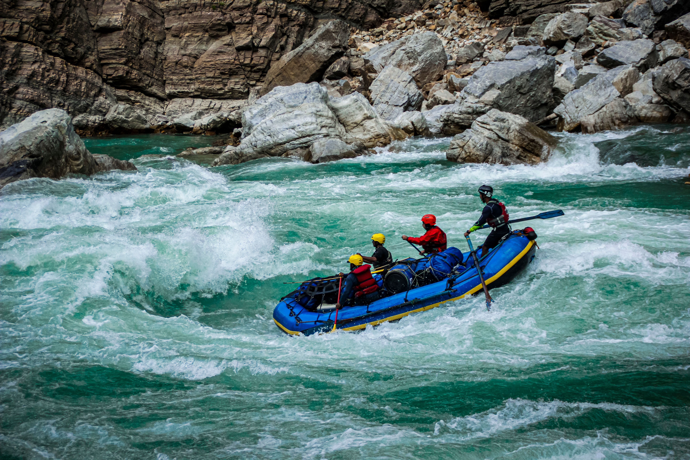
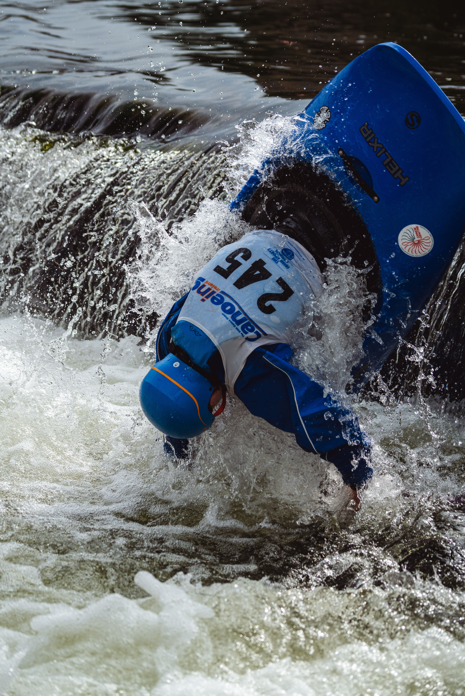
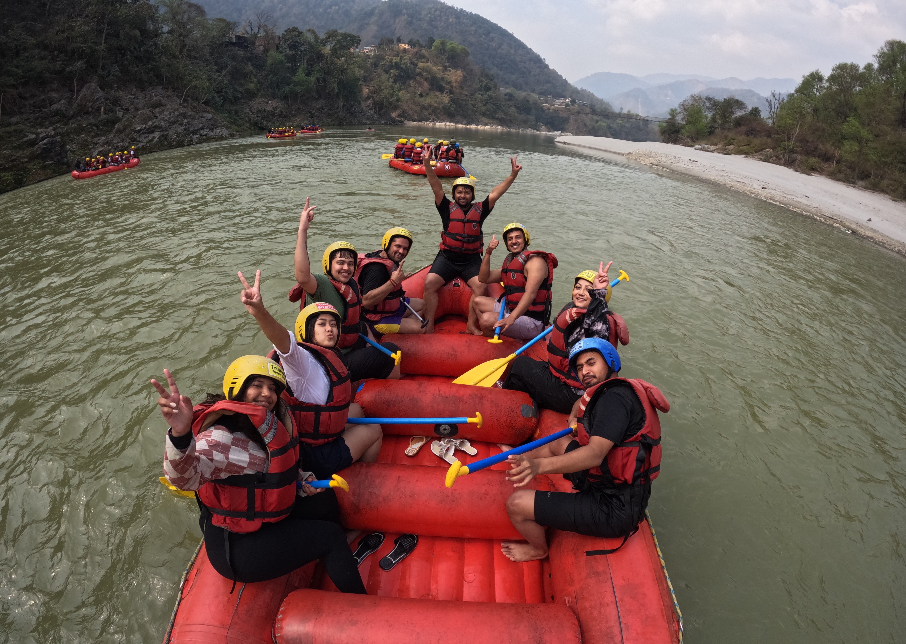

A energia da Bahia nas melhores corredeiras. Guiando você com total segurança e adrenalina pura.


A energia da Bahia nas melhores corredeiras. Guiando você com total segurança e adrenalina pura.
Na Rif Salvador BA, especializamo-nos em transformar águas bravas em momentos inesquecíveis. Ao longo dos anos, já realizamos centenas de descidas guiadas com foco em segurança e conexão com a natureza.
Recebemos famílias, equipes corporativas e aventureiros de todo o país, unindo guias experientes, equipamentos confiáveis e respeito às águas da Bahia em cada passeio.



